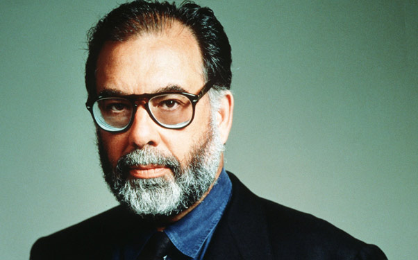

Francis Ford Coppola
Biografía
Nació el 7 de abril de 1939 en Detroit, Michigan, en el seno de una familia de origen italoamericano y ambiente artístico.
Segundo de los tres hijos de Carmine Coppola, flautista con la Orquesta Sinfónica de Detroit y que llegó a ser primer flauta de la orquesta de Arturo Toscanini, compuso música para las películas de su hijo; y de Italia Pennino, actriz. Su hermano mayor es August Coppola, su hermana menor la actriz Talia Shire. Nacido en una familia de ascendencia italiana, sus abuelos paternos llegaron a Estados Unidos desde Bernalda, Basilicata. Su abuelo materno, el popular compositor italiano Francesco Pennino, emigró desde Nápoles. Dos años después de su nacimiento, su padre fue nombrado flautista principal de la Orquesta Sinfónica de la NBC y la familia se trasladó a Nueva York, estableciéndose en Woodside, Queens, donde Coppola pasó el resto de su infancia.
Cuando contaba diez años de edad tuvo que guardar cama por la polio, así que pasaba el tiempo animando marionetas, montando y sincronizando con un magnetófono las películas amateur realizadas por su familia.
Se formó en la Universidad de Hofstra, donde, en 1960, consiguió una licenciatura en teatro, y en la escuela de cine de la Universidad de California de Los Angeles (UCLA). Siendo aún estudiante en esta última, comenzó a trabajar para Roger Corman, destacado director y /Productor de películas de serie B.
Consiguió el premio Samuel Goldwyn por sus guiones y se inicia en el aprendizaje de las diferentes etapas de elaboración de una película. De este periodo hay que destacar algunos cortometrajes eróticos (entre los que destaca The Pepper, en 1961), montó y dobló películas de aventuras soviéticas para la American International de Roger Corman, con quien trabajaría en Irlanda en el largometraje The Young Racers (1963). Cuando regresó a California, firmó un contrato con la compañía Seven Arts para escribir unos guiones que darían lugar a las películas Propiedad condenada (Sidney Pollack, 1966), Arde París (R. Clément, id.), Reflejos en un ojo dorado (John Huston, 1967), y Patton (F. Schaffner, 1970). Esta compañía le ofreció la posibilidad de dirigir su segunda película Ya eres un gran chico (1967), comedia rápida sobre las relaciones de un joven inhibido y torpe con su familia y las mujeres.
Comenzó a trabajar con su propia /Productora o para alguna de las grandes, como la Paramount o la Universal. El padrino (1972), inspirada en la novela de Mario Puzo, fue la obra que le convirtió en uno de los realizadores más destacados de los años setenta gracias a su extraordinario éxito. A pesar de críticas adversas ocasionales, y de algunos sonados fracasos comerciales (tras Corazonada, 1981, tuvo que vender sus estudios), Coppola ha logrado el éxito internacional y varios oscars por sus trabajos, entre los que se pueden destacar La conversación (1973), El padrino II (1974), Apocalypse now (1978), en la que Coppola se nos muestra como un maestro del cine novelesco, un excelente director de actores y con la ayuda de los directores de fotografía Gordon Willis y Vittorio Storaro y del decorador Dean Tavoularis, un artista sensible a la textura de los objetos con un lirismo "operístico" en el que encontramos su origen italiano: Rebeldes (1983), La ley de la calle (1983), Cotton club (1984), Peggy Sue se casó (1988), Tucker: un hombre y su sueño (1988), El padrino III (1990), y Drácula, de Bram Stoker (1992).
También es importante su aportación como /Productor de obras tan importantes como American Graffiti (1973), de George Lucas, El corcel negro (1979), la reconstrucción del film de Abel Gance Napoleón (1925), El hombre de Chinatown (1982), de Wim Wenders, o Koyaanisqatsi (1983), película experimental, sin actores, con música de Philip Glass.
En 1990 volvió con "El padrino III" donde su hija Sofía encarna a la heredera de Michael Corleone. Aunque fue "Drácula" (1992) la película que le valió nuevamente el reconocimiento de la crítica y del público. Dirigió una adaptación de la novela de John Grisham, "Legítima defensa" (The rainmaker), en 1997. También produjo la película de Tim Burton, "La leyenda del jinete sin cabeza (Sleepy Hollow, 1999).
Con cinco Oscar en su haber, en 2001 presentó en el Festival de Cannes un nuevo montaje de su Apocalypse Now al que titula Apocalypse Now Redux, en la que suma casi media hora de metraje inédito; filme de culto, le costó 27 kilos y meses y meses de disgustos en un rodaje de lo más accidentado en Filipinas. Tras casi diez años sin estrenar película, regresó con el melodrama Youth Without Youth, protagonizado por Tim Roth y Alexandra Maria Lara. Fue rodado en Rumania con equipo europeo. En 2008 rueda en Argentina su proyecto, Tetro, sobre la inmigración italiana en Buenos Aires en los inicios del siglo XX y protagonizada por Vincent Gallo y la española Maribel Verdú.
Su hija Sofia Coppola logró reputación como directora y guionista con los filmes Las vírgenes suicidas, Lost in Translation y María Antonieta. Su hijo, Roman Coppola, también ha realizado algunos filmes. Su hermana Talia Shire, es actriz y aparece en la saga de Rocky y de El Padrino; sus sobrinos Nicolas Cage, es un famoso actor y Jason Schwartzman (hijo de Talia), también trabaja en el cine independiente.
Se ha dedicó a la elaboración de vinos en el Valle de Napa de California, con su bodega Niebaum-Coppola, además produce una línea de de pastas y salsas: Mammarella y ha abierto hoteles en Guatemala, Belice, y en Buenos Aires, en el barrio de Palermo. Abrió el 1 de marzo de 2012 su primer hotel europeo en Italia. Palazzo Margherita se encuentra en Bernalda, el pueblo natal de su abuelo, Agostino Coppola.
El 6 de mayo de 2015,Francis Ford Coppola fue galardonado con el Premio Princesa de Asturias de las Artes por su contribución privilegiada al universo del cine. El jurado del Premio Princesa de Asturias de las Artes 2015 valoró de Francis Ford Coppola que se trata de un "narrador excepcional" y de un "renovador temático y formal", que se ha convertido en un director de cine "imprescindible para entender la transformación y las contradicciones de la industria".